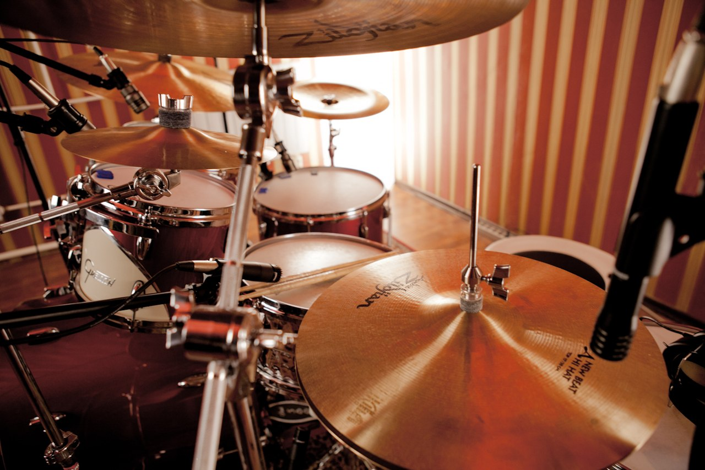
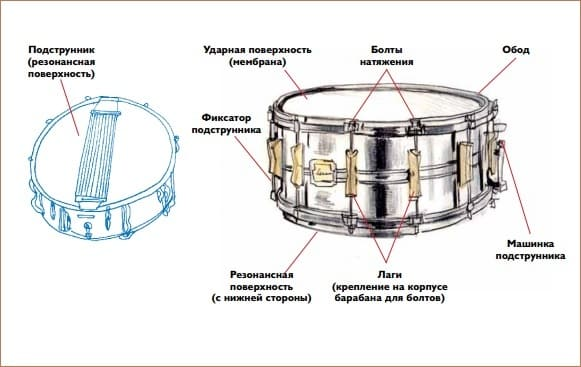

Барабан относится к группе ударных музыкальных инструментов. Среди множества разновидностей наиболее известен мембранный барабан, имеющий плотный металлический или деревянный корпус, обтянутый сверху мембраной (кожаной, пластиковой).
Устройство инструмента нехитрое, он состоит из следующих элементов:
Корпус. Изготовлен из металла или дерева. Лист, образующий корпус, замыкается в круг, внутри являясь полым. Верхняя часть корпуса оснащена ободом, закрепляющим мембрану. По бокам располагаются болты, служащие для натяжения мембраны.
Мембрана. Натягивается на корпус как сверху, так и снизу. Материалом для современных мембран служит пластик. Ранее в качестве мембраны использовали кожу, шкуры животных. Верхняя мембрана называется ударным пластиком, нижняя – резонансным. Чем больше натяжение мембраны – тем громче звук.
Палочки. Являются неотъемлемой частью барабана, так как отвечают за звукоизвлечение. Материал изготовления – дерево, алюминий, полиуретан. От толщины, материала, размера палочек зависит то, как будет звучать инструмент. Часть производителей маркирует палочки, указывая на их принадлежность: к джазу, року, оркестровой музыке. Профессиональные исполнители отдают предпочтение палочкам, сделанным из дерева.
✔ Москва, СВАО
+7 (916) 151-25-22
vidrum69@mail.ru
Топ 5 музыкальных инструментов